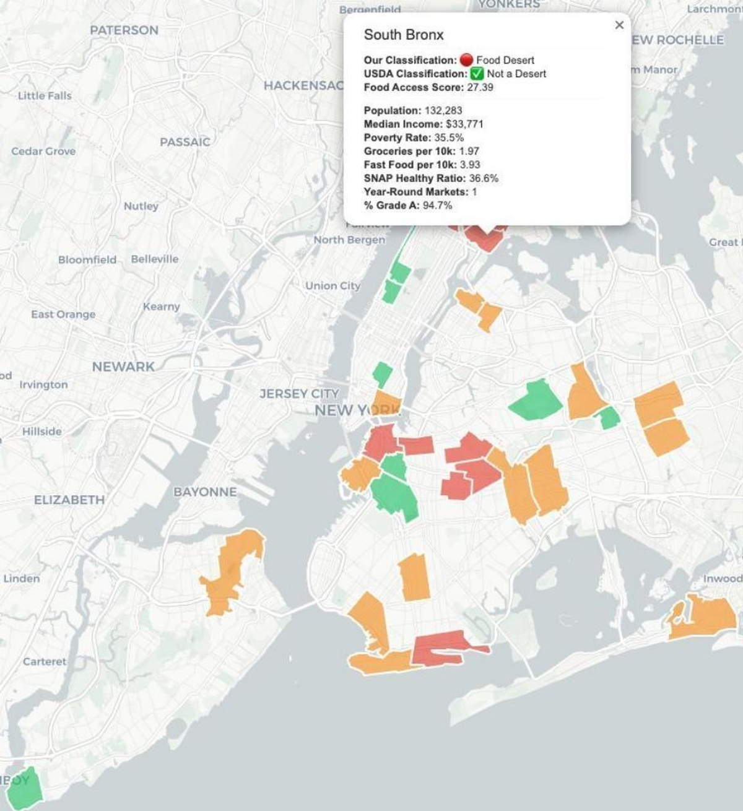

NYC Food Desert Analysis
Python · MongoDB · Folium · Google Places / USDA / Census APIs
The USDA's rural 1-mile threshold misclassifies dense urban neighborhoods — flagging zero deserts across the Bronx and Manhattan. I built a 6-source pipeline of 70,000+ records and a composite Food Access Score from 8 weighted variables, delivered as an interactive choropleth across all five boroughs.
7 + 13deserts & at-risk areas found
59.8point access spread
3.5×poverty gap exposed
ETL PipelineMongoDB AtlasGeospatialComposite Scoring
